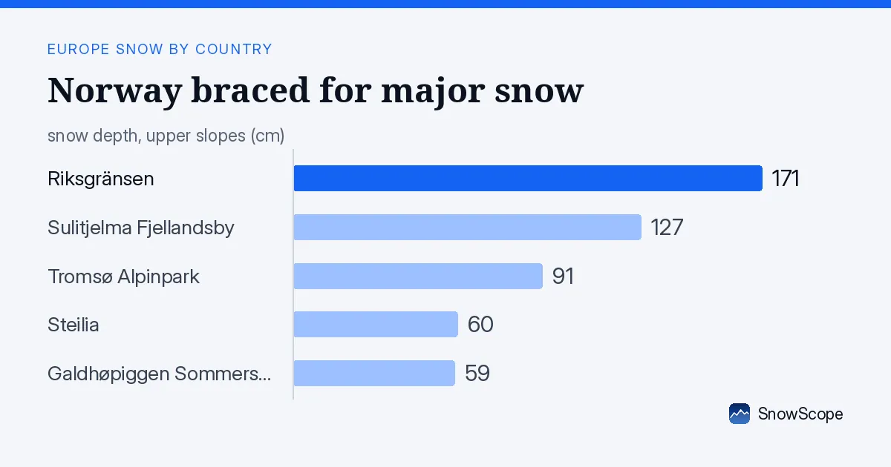

Norway braced for major snow: 39 cm expected in the week ahead
Norway is heading into a significant snow event. Forecasts show up to 39 cm of fresh snow over the next week, with November 20 as the peak day at 16 cm—a sharp increase from the modest 4 cm that fell in the past 24 hours.
See the live snow forecast for Riksgränsen in the SnowScope appSnow depth, powder alerts and the 3D map, free.
What the forecast shows
Our snow model predicts 39 cm of new snow across Norway in the next seven days, with 19 cm possible in just the next three days. November 20 is flagged as the snowiest day, when around 16 cm is expected. This is a marked shift from recent quieter weather: only 4 cm fell in the past day, though the three-day total to November 17 reached 37 cm across parts of the country.
The timing matters. Early-season snow at these volumes will build a base fast in the high mountains but may settle quickly at lower elevations. The two hotspots—Hardangervidda with 56 cm in three days and Jotunheimen with 48 cm—show where the heaviest recent accumulation has been, and they lie in the path of the incoming system.
| Resort | Snow depth | New snow, 72 h | Coming, next days | Top |
|---|---|---|---|---|
| Riksgränsen | 171 cm | 3 cm | 5 cm | 900 m |
| Sulitjelma Fjellandsby | 127 cm | 8 cm | 5 cm | 542 m |
| Tromsø Alpinpark | 91 cm | 10 cm | 3 cm | – |
| Steilia | 60 cm | 3 cm | 2 cm | – |
| Galdhøpiggen Sommerskisenter | 59 cm | 12 cm | 6 cm | 2,180 m |

Where the snow is deepest now
Snow depths vary sharply by height. Above 2000 m, our model shows an average of 38 cm with complete cover. At 1500–2000 m, the mean is 28 cm and coverage is total. Between 1000 and 1500 m, 24 cm depth and full cover are modelled. Lower down, the picture thins: 500–1000 m averages 18 cm at 96 percent cover, while below 500 m the mean is just 7 cm with 80 percent coverage.
Riksgränsen, the depth leader, holds 171 cm at 900 m elevation—the benefit of far-north latitude and orographic enhancement. Sulitjelma Fjellandsby sits at 127 cm. At the other end, Tromsø Alpinpark carries only 91 cm, and both Steilia and Galdhøpiggen Sommerskisenter are well below 60 cm. The gap between high-mountain and low-elevation resorts is typical for November.

How this week compares to normal
Most resorts are tracking close to or slightly below their late-November average. Riksgränsen stands at 54 cm compared to its usual 59 cm for mid-November—about 92 percent of normal. Sulitjelma Fjellandsby is at 49 cm versus a typical 52 cm, also near 94 percent of normal. Both are in decent shape for the season opener.
The concern lies in the lower mountains. Tromsø Alpinpark sits at just 46 percent of its normal 37 cm depth, while Steilia is at 54 percent and Galdhøpiggen Sommerskisenter at 39 percent of its typical 82 cm. The incoming storm will help narrow these gaps, especially where elevation is high, but early-season cover remains uneven.
Snow cover across the country
White cover now blankets 251,050 km² of Norway's modelled 282,220 km², or 89 percent of the mapped area. That is an increase of 4,740 km² in just one day and a gain of 67,960 km² over the past week—a rapid expansion driven by the recent heavy falls in the highlands. The snow line sits at 0 m, meaning snow reaches sea level in many areas.
What to watch next
The next three days will see snow spread and deepen, with the main push arriving around November 20. After that, conditions stabilize over the following week. High elevations—especially above 1500 m—will gain the most, while valley floors and lower resorts will fill in more gradually. Early-season snow is thin enough that rocks and thin patches are common below 1000 m even after fresh falls, so caution is wise when venturing off-piste.
How Norway compares to its neighbours
Sweden is currently at 79 percent white cover with 130 cm at Abisko, and faces up to 25 cm in the week ahead. Finland lags more visibly at 61 percent cover and just 24 cm at Kallin, with a forecast maximum of 16 cm. Norway sits between them in timing and volume, suggesting a broad Atlantic system is reaching Scandinavia from west to east.
Tips for skiers
- High mountains above 1500 m are your safest bet this week. Snow depths of 25–38 cm are modelled there, and 16 cm more is coming on November 20. Lower resorts will improve but remain thin until the full system lands.
- If you plan to ski below 1000 m in the next few days, watch for rocks and sparse coverage even after fresh falls. Wait until November 20 or 21 for better consistency at valley resorts.
- Riksgränsen and Sulitjelma Fjellandsby are tracking near normal and have solid base depths. Both should be skiable early next week if they open.
- Before going off-piste anywhere in Norway, check the official avalanche bulletin for your region and your chosen slope. Early-season snow can be unstable on steep terrain.
- Track the forecast as November 20 approaches. If the storm shifts timing or intensity, resort conditions will change. Use the SnowScope app to check updates at your chosen area.
About these numbers
Resort snow depths are the deepest snow on the resort's upper slopes from the SnowScope snow model (about 1 km, run of 17 November); they are estimates for an area, not a measurement at one point. Station values are measurements on the date shown. Forecasts can change. Always read the official avalanche bulletin before going off-piste.
Cite this report
For research, teaching or the press: the numbers and charts are free to reuse under CC BY 4.0 with this citation.
SnowScope (2026), Norway braced for major snow: 39 cm expected in the week ahead, https://snowscope.app/blog/en/2026/11/norway-snow-report-17-november-2026.html, accessed 2026-11-17
SnowScope (Atlas Labs). (2026, November 17). Norway braced for major snow: 39 cm expected in the week ahead. SnowScope snow reports. https://snowscope.app/blog/en/2026/11/norway-snow-report-17-november-2026.html
BibTeX
@misc{snowscope2026norwaysnowreport17novemb,
author = {{SnowScope (Atlas Labs)}},
title = {Norway braced for major snow: 39 cm expected in the week ahead},
year = {2026},
month = nov,
howpublished = {\url{https://snowscope.app/blog/en/2026/11/norway-snow-report-17-november-2026.html}},
note = {Published 2026-11-17 12:53 UTC; accessed 2026-11-17}
}· CC BY 4.0 · Methods, data and tools →
Riksgränsen: snow and temperature by height, this winter vs last (tools) →
Follow Riksgränsen
Free: a message when fresh snow is coming, and the forecast every morning.
More snow reports

Grimentz-Zinal offers 71 km of runs and reliable high-altitude snow for your December trip, with 6-day passes at CHF 339.00.

Grandvalira is often sold as cheap December skiing, yet natural snow at the base averages just 9 cm in past winters.

Planning a December trip to Baqueira Beret? See our snow history, ticket prices starting at 70,00 € for a 1-day pass, and how it compares to Astún-Candanchú.